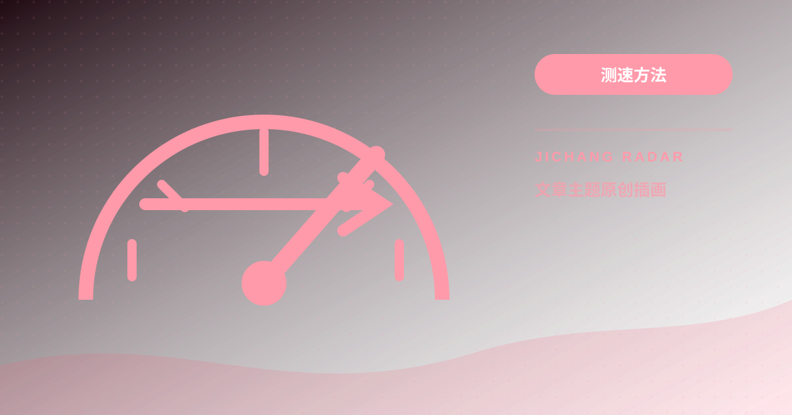

电信、联通、移动与广电宽带怎么挑节点？三网跨网结算与出口路由避坑指南
深度剖析中国电信（163/CN2）、中国联通（169/9929/CUG）、中国移动（CMI）及广电宽带在国际出口与跨网互联结算（Peering）上的物理瓶颈。详解移动跨网直连高延迟与丢包成因，提供四大运营商加速节点选型匹配模型与实战避坑指南。

节点卡顿根源往往在物理国际出口与国内“跨网互联结算（Peering）”壁垒。移动或广电宽带若跨网直连电信入口，数据包被迫绕经国家级互联交换中心，陡增 80ms-150ms 延迟并引发晚高峰丢包。选型法则是：电信选同网中转防骨干过载；联通发挥低抖动主攻亚太直连；移动与广电必须锁定同网移动（CMI）或同网多线中继，避开跨网结算惩罚。
+-------------------------------------------------------------------------+
| 三网跨网互联结算与出口路由瓶颈观测模型 |
+-------------------------------------------------------------------------+
[移动/广电宽带] --(跨网互联结算壁垒: NAP交换中心拥堵/高延迟)--> [电信单线入口] (严重劣化)
|
+----(同网直连/同网多线中继: 广东/上海/北京 CMI骨干)--> [亚太优质落地] (低时延平稳)
[电信宽带用户] -----(晚高峰 163 骨干互联汇聚层拥塞 30%+)-----> [境外公网节点] (晚间跳ping)
|
+-------------(本网优质入口/双向动态路由审计链路)-----> [国际高速出海] (高吞吐)
+-------------------------------------------------------------------------+运营商物理出口底色：三网国际出口带宽与晚高峰拥塞模型
挑选节点离不开本地骨干网属性。国内运营商海缆与自治系统（AS）差异决定了晚高峰出海质量：
1. 中国电信（ChinaNet / AS4134）
163 骨干网出海容量居全国首位。但因用户基数庞大，北上广出海互联局在晚高峰极易过载，普通公网节点受 QoS 限制，普通直连极易遭遇单向回程拥堵。2. 中国联通（China169 / AS4837）
人均国际带宽宽裕，北方出境走线优异，与日本 NTT、软银直连互通良好，晚高峰抖动率显著低于电信普通公网。3. 中国移动（CMI / AS9808）
依托 CMI 在香港拥有庞大算力枢纽，直出香港或新加坡吞吐极强；但长途出海需经亚太机房转接第三方。4. 中国广电（China Broadnet）
尚无独立国际海缆站，出海流量与移动签署协议借道 CMI，拓扑上属于移动体系衍生网络。跨网结算的“减速陷阱”：为什么移动宽带直连电信入口会狂跳 Ping
“移动宽带机场推荐”与“广电宽带节点卡顿怎么解决”是高频痛点，根源在于跨网互联结算机制。
移动宽带访问电信机房时数据被迫送往异地国家级交换中心（NAP）转接，产生两大恶果：
1. 路由绕行延迟叠加：往返物理延迟凭空增加 50ms-90ms。
2. 晚高峰结算带宽丢包：互联接口容量受限，晚高峰丢包率达 20%-40%，引发重传与跳 ping。
因此，“三网优化机场节点”与“电信联通翻墙节点选型”必须严格区分，移动或广电连接电信单线入口必遭严重劣化。
四大运营商网络特性与加速节点选型匹配表
技术团队基于分布式探针实测，提炼出四大运营商网络特性与选型匹配矩阵：
| 运营商类型 | 核心物理自治系统 (AS) | 出口骨干网络特性 | 跨网结算敏感度 | 最优直连节点方向 | 最优中转链路组合 | 核心避坑要点 |
|---|---|---|---|---|---|---|
| 中国电信 | AS4134 (163) / AS4809 (CN2) | 国际总容量最大，晚高峰普通 163 高载 | 高（跨网至移动受挫） | 美西直连、香港特选 | 电信单线入口 / 三网 BGP 多线中转 -> 亚太 | 避免硬连普通 163 公网，优先选电信同网中转 |
| 中国联通 | AS4837 (169) / AS9929 (A网) | 人均带宽充裕，亚太欧美路由均衡 | 中（北方跨省佳） | 日本（东京/大阪）、美西 | 联通单线入口 / 移动 BGP 入口 -> 亚太中继 | 发挥北方直连日本优势，避开复杂的多跳转接 |
| 中国移动 | AS9808 (CMI 骨干网) | 亚太海缆与广深极强，欧美依赖转接 | 极高（严禁跨网连电信） | 中国香港、新加坡节点 | 广东/上海移动 CMI 专线入口 -> 亚太落地 | 必须支持中国移动同网直达，切勿选单电信入口 |
场景化避坑实操与弱势网络防护
实际选线配置时，建议遵循三项实操原则：
1. 坚持“入口运营商同构”
移动宽带优先选标注“移动入口”、“CMI”或“三网 BGP”线路。若本地到入口机房延迟超 60ms 且跨越 NAP 交换中心，说明发生了跨网互联惩罚，应果断切线。2. 避免盲信“物理地理最近”
北方联通直连日本东京延迟仅约 35ms 且平直；若硬连香港，跨省南下延迟反倒超过 60ms。3. 弱势网络下的数据隐私防护协同
移动与广电处于多重 NAT 穿透环境，为防范中继节点元数据嗅探，建议同步查阅专栏： 内部链接: 节点隐私安全与零日志审计（No-Logs）选型：如何防范服务商数据记录与泄露 从物理层与存储安全构建完整的双重防线。延伸深度 FAQ
Q1：移动宽带为什么被戏称为“快乐网”但晚高峰易跳 ping？
移动在国内 CDN 建设上投入巨大，白天访问国内网页与视频吞吐极高。但其国际出口与庞大用户数相比依然偏紧，且欧美国际段依赖转接。到了 20:30 晚高峰，跨洋公网队列饱和，若连接长途公网而非移动亚太专线，TCP 拥塞窗口便频繁腰斩，导致延迟剧烈跳动。
Q2：广电宽带借道移动出口的节点选择技巧？
广电绝大多数出海流量挂靠移动 CMI 体系。挑选节点时应将广电宽带视作“弱化版移动宽带”：第一，放弃电信单线中转与欧美直连；第二，首选广东移动汇聚出海的香港或新加坡节点；第三，客户端适当调大建连超时阈值，抵消多层 NAT 转换与城域网汇聚带来的初始建连损耗。
Q3：校园网与教育网（CERNET）环境选型注意？
高校教育网访问境外商业网络配额严格，且对单 IP 并发 UDP 连接有限速。在校园网环境下，应优先选用支持完整 IPv6 双栈的节点，利用校园网原生 IPv6 直连通道绕过拥挤的 IPv4 出口网关；同时尽量采用标准 TCP 加密隧道，规避校园网防火墙对 UDP 流量的限流阻断。
---
*技术客观选型建议：破除单一营销话术，根据本地真实运营商拓扑架构制定选路方案，可系统性查阅：*
内部链接: 全场景节点与加速方案综合选型与技术指南
请遵守所在地法律法规、单位网络政策和第三方服务条款。本文只提供一般技术信息，不构成法律意见，也不提供节点或绕过授权的服务。